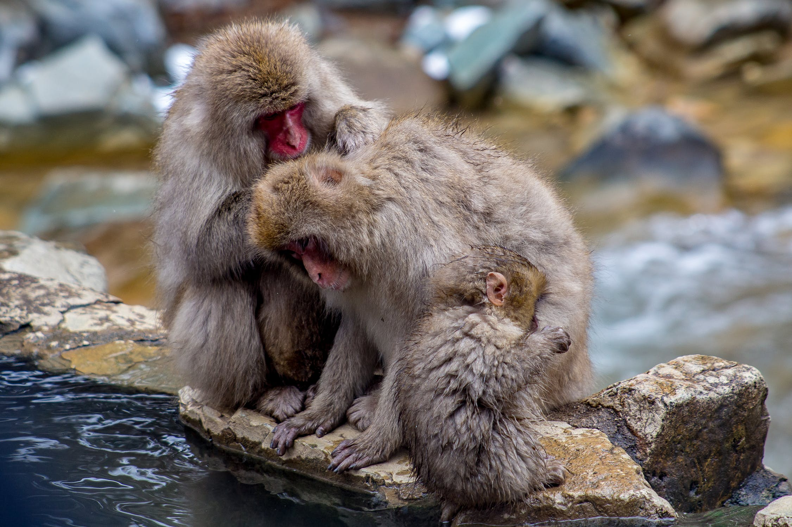
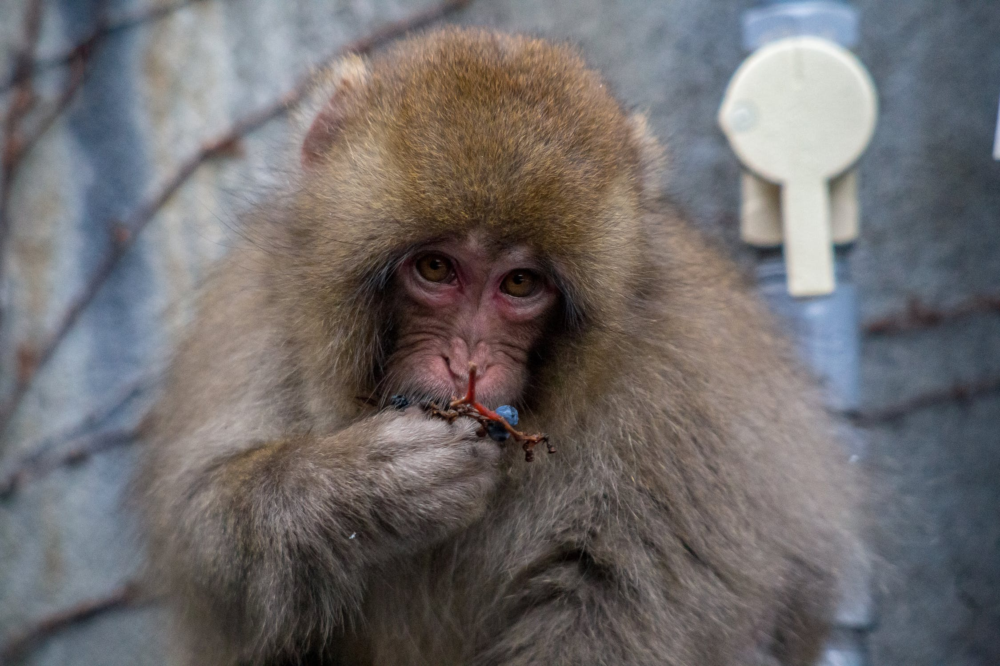
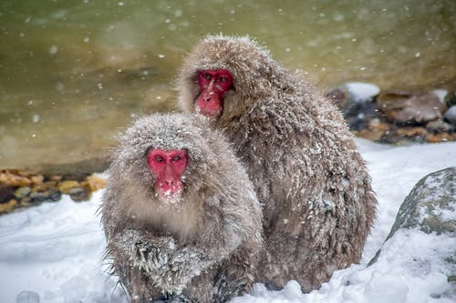

Japanese Macaque As Specie
The Japanese macaque is a terrestrial monkey. It is also called
“snow monkey” because it inhabits areas where snow covers the
ground for some months of the year. The monkey has a pinkish face
and posterior with the rest of the body covered in gray hair. The
coat is adapted to the cold area with the thickness increasing as
the temperature decreases. The Japanese macaque is omnivorous,
eating varieties of food including 213 species of plants, insects,
and soil.


Japanese Macaques Habitat
Macaques from Japan live in subtropical and subalpine woods. They
are found in cool temperate deciduous broadleaf woods in the
northern section of their range. Temperatures in this region
average 10.9 degrees Celsius, and annual rainfall averages 1500
millimetres. Japanese macaques reside in evergreen broadleaf woods
in the southern half of their natural habitat. The average
temperature in this region is 20 degrees Celsius, while the annual
average rainfall is 3000 millimetres. Winters are hard across
their habitat, and Japanese macaques prefer to spend their winter
months at lower elevations. Although they have been observed at
elevations as high as 3180 m, they typically stay below 1800 m
during the winter months.
Japanese Macaques Physical Description
Japanese macaques are colored in a variety of shades ranging from
brown to gray to yellowish brown. They have a vibrant face and a
pinkish red posterior end. Their fur is extremely thick, which
helps them stay warm during harsh winters, as they do not
hibernate. They have a stubby, short tail. Male Japanese macaques
are generally taller and more massive than females. Males weigh an
average of 11.3 kg and stand 57 cm tall. Females weigh an average
of 8.4 kg and stand 52.3 cm tall. Additionally, a correlation
appears to exist between the body weight of Japanese macaques and
climate. Japanese macaques in the south generally weigh less than
those in the north, at higher elevations, where more snow
accumulates during the winter months. Japanese macaques that have
been provisioned have a larger skull than macaques that have not
been provisioned. Male provisioned Japanese macaques have an
average skull length of 134.4 mm, while females have an average
skull length of 118.1 mm. Non-provisioned individuals have a
slightly smaller skull, measuring an average of 129.5 mm in males
and 115.8 mm in females.
